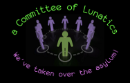

Currently, I am actively working on the following projects:
- Ironfan [ Ruby, Strongswan, AWS, clustering ]
- Ironfan is the lightweight cluster orchestration toolset from Infochimps, built on top of Chef.
- Of particular interest are two items I completed:
- I wrote the Strongswan cookbook for ironfan; which allows the building of VPN clusters on AWS that optionally allow connecting to private servers inside a VPC
- I wrote and enhanced ironfan's core code so that allows the creation, use, attachment and manipulation of Elastic IPS for both standard and VPC domains
- VyncUp (TDHP Event database) [ Python, CouchDB, HTML5, JS, jquery, node.js, backbone.js, underscore.js ]
- developed non-flash browser-based file upload system for internal project use
- developed automated email daemon using CouchDB’s changes feed
- setup deploy and maintained backend for distributed version control system
- setup deploy and maintained backend for java-based webapp and CouchDB instance
- tumen_miner [ JS, WebCL ] - open-source bitcoin miner based on krad_miner
- ongoing development to allow embedding of voluntary pooled bitcoin mining
- developing apps to take advantage of background mining via idle gpu processes
- kowm - [ C++, Python, Ruby ]
- designing a Ruby Build Environment associated with kowm
- developing a suite of libraries that support the building of modular X apps
- developing new X Window Manager using these frameworks
The following list contains projects that I have worked at some point in the past:
- kouch is intended to be a collection of utilities useful for using newer features in CouchDB
- ...more to come when I have more time for updates.